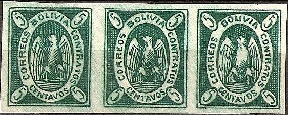
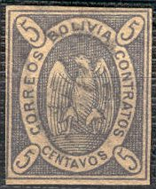
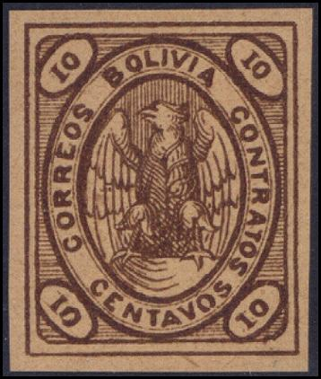
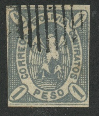
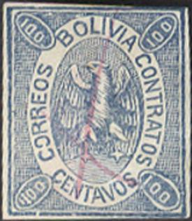
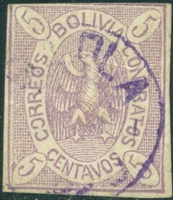
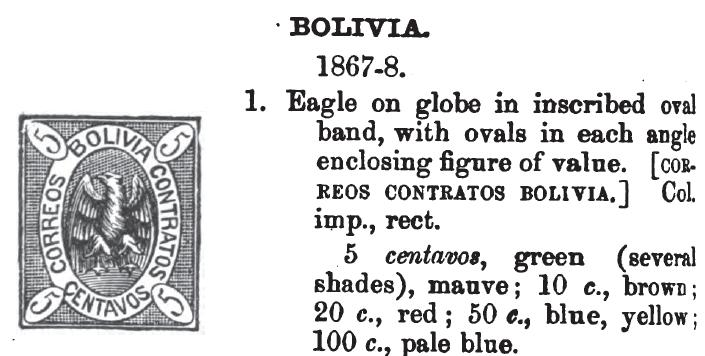
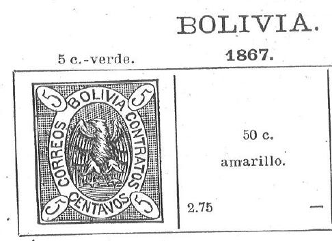
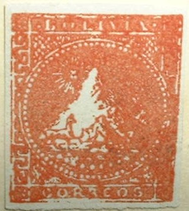

Certified genuine
Return To Catalogue - Bolivia 1869-1896 - Bolivia 1897-1920
Note: on my website many of the
pictures can not be seen! They are of course present in the
catalogue;
contact me if you want to purchase it.

Certified genuine

5 c green 5 c violet 10 c brown 50 c yellow 50 c blue 100 c blue 100 c green
The above stamps were engraved by Estruch La Paz and printed at Cochabamba. There are many types of these stamps (the 5 c green plates for example were reengraved 4 times). They could also be used for fiscal purposes (cancelled by penstrokes). In fact, they were mainly used fiscally (only 10 to 20% was used for postal duty). Due to poor ink quality, there are many color shades of these stamps.
All other values, 2 c lilac, 2 c yellow, 20 c red, 100 c brown, 1 Peso grey and "UN PESO" blue etc. are bogus issues. More information can be found at: http://www.corinphila.ch/media/upload/PDF/peredo.pdf.
Value of the stamps |
|||
vc = very common c = common * = not so common ** = uncommon |
*** = very uncommon R = rare RR = very rare RRR = extremely rare |
||
| Value | Unused | Used | Remarks |
| 5 c green | *** | *** | Shades of green Fiscally used: * |
| 5 c violet | RRR | RRR | Fiscally used: RR |
| 10 c brown | RRR | RRR | Fiscally used: RR |
| 50 c yellow | *** | R | Fiscally used: *** |
| 50 c blue | RRR | RRR | Fiscally used: RR |
| 100 c blue | RR | RR | Fiscally used: *** |
| 100 c green | RRR | RRR | Fiscally used: R |
Part of a sheet with different types of the 5 c green stamp:

Reprints exist of these stamps (made in 1890), also with forged cancellations (I've seen "SUCRE", "LA PAZ" and "FRANCO"(?) in one line).
Examples (by the way, I'm not sure if all the above stamps are genuine):






(Reduced sizes)

Very dubious item, the "100"s at the bottom are
inverted.

Other forgeries with the "100"s at the bottom inverted,
but more primitive.
To make things even more complicated, reprints exist made in 1897, also with forged cancels.
If anybody has more information about the forgeries and reprints of this country, please contact me!
Reduced sizes, the 20 c red is a bogus issue



Some sources say that these stamps were forged by Spiro (Hamburg, Germany), other mention Taylor of Boston (USA). These forgeries are all printed in the same type and usually cancelled with a pattern of parallel lines, though I have also seen a pattern of dots. The following values were forged: 5 c green, 5 c violet, 10 c brown, 20 c red (bogus), 50 c blue and 1 P grey (bogus).

This forgery of the 100 c has "1100" in the left lower
corner. The first "O" of "CORREOS" has an
opening at the left. I've seen this forgery uncancelled as well
as with pencancel. The above forgery shows a resemblance with the
5 c value of the next forgery set (same opening of the
"O" etc), they might have been made by the same forger.



Set of forgeries made by the same forger, including the bogus 2
c, 20 c and "UN PESO" values. The eagle design of the 5
c looks different from the other values. The background behind
the eagle consists of dots (except for the 1 Peso value).



I've been told this stamp is also a forgery.
Even the forger Jean de Sperati has made forgeries of at least one of these stamps. I've seen a pair of 10 c brown stamps which were forged by him with cancel "CORREO DE LA PAZ 20 DIC...". Sperati forged positions 28 and 29 of the original sheet.

Sperati forgery
I've also heard about 'Eberhardt' forgeries of the 50 c green and 50 c yellow, they seem to be very dangerious. Eberhardt (Enrique Conrado?) was a forger from Chile (Valparaiso?).

Eberhardt forgery
In The Stamps Collector's Magazine of
1868, Vol VI, page 72, the following text can be found (James
M.Chute was a famous 'Boston Gang' stamp forger; see the
book of Varro E.Tyler):
Bolivia. — We are indebted to an old correspondent. Mr.
Chute, for notice of another stamp fur tins state—a 15 c,
blue on white paper. Mr. Chute sends us a careful draught of the
design, by which it appears that the space outside the oval is
filled in with colour', and in place of the word CONTRATOS, the
word ANOTADOS, meaning, we presume, ''registered," appears
on the side. The general design is the same. This new value is
printed in dark-blue on white paper, and as poorly executed as
the rest of the series.
In the next issue of this journal (Jan. 1869, Vol VII, page
16) a certain W.C.Bancroft declares that a certain F.C.Milne of
the United States consulate at Cobija Bolivia has heard from Don
Alberto de Barios of the Bolivain postal department that the
following set of stamps were issued (with dates of issue):
5 centavos green and 5 centavos pink [qy.lilac] March 5th, 1867
10 c brown April 1st 1867
15 c blue (dark), 15 c green, April 20th 1867
20 c red May 1st 1867
50 c blue, 50 yellow, May 10th 1867
100 c blue, May 10th 1867
1 peso deep red, 1 peso blue, June 1st 1867
This looks like a scam to get the bogus values 15 c blue, 15 c
green 20 c red, 1 Peso grey and 'UN PESO' blue in the market.
Further doubts are expressed by the editor on page 38 of this
journal. Then on pages 66-69 the full story emerges: this was
part of a swindle together with S.Allan Taylor, F. Trifet,
J.M.Chute who used several fake names: Bancroft,
Charles.P.Wright, George Stewart, Fred. A.Washburne etc (see page
128 of this same magazine).

Garcia essays from 1863. Original essays were only printed in
black and blue. Reprints were printed in other colors as well:
red, green, yellow.

Essay for Bolivia, with mountain in a circle, inscriptions
"BOLIVIA" on top and "CORREOS" below. This is
probably a reprint of the essay. These reprints also exist with
fancy overprints (1/2 REAL, 1 REAL, 4 REALES, 1 PESO). They also
exist perforated.

I've been told that this stamp with arms and inscription
"REPUBLICA BOLIVIANA CORREOS" is a Riester proof of
1864. The letters "M.R.F" are printed in the bottom
right corner.

A forgery of the above essay.


{kind=link}
{kind=link}
{kind=link}
{kind=link}